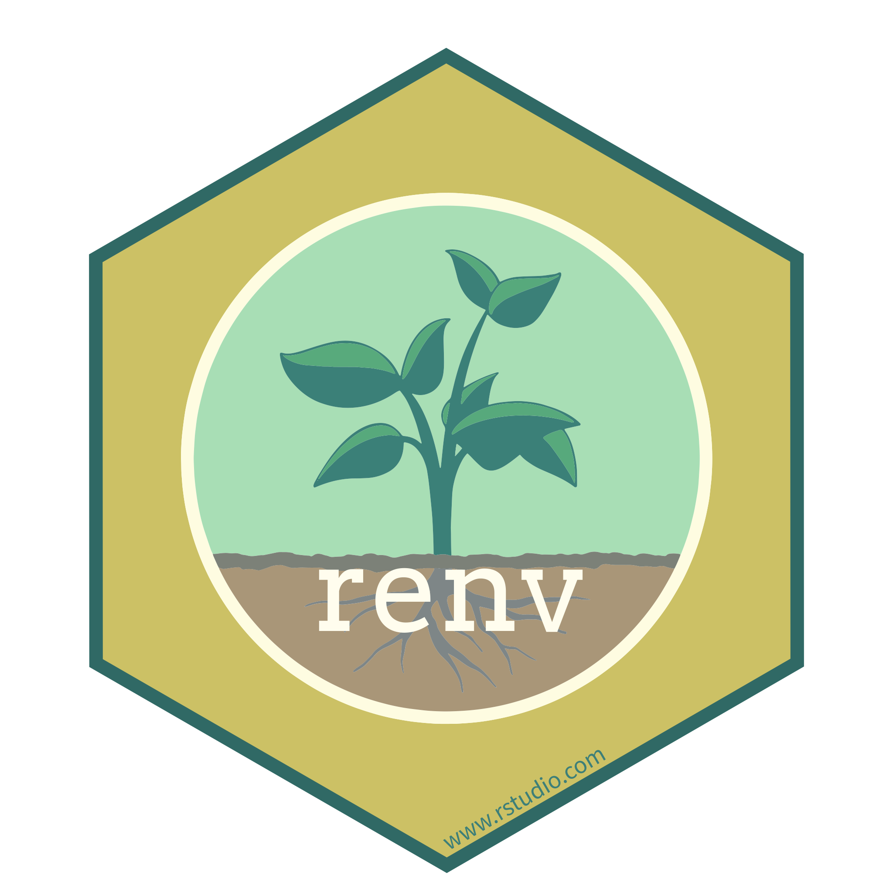
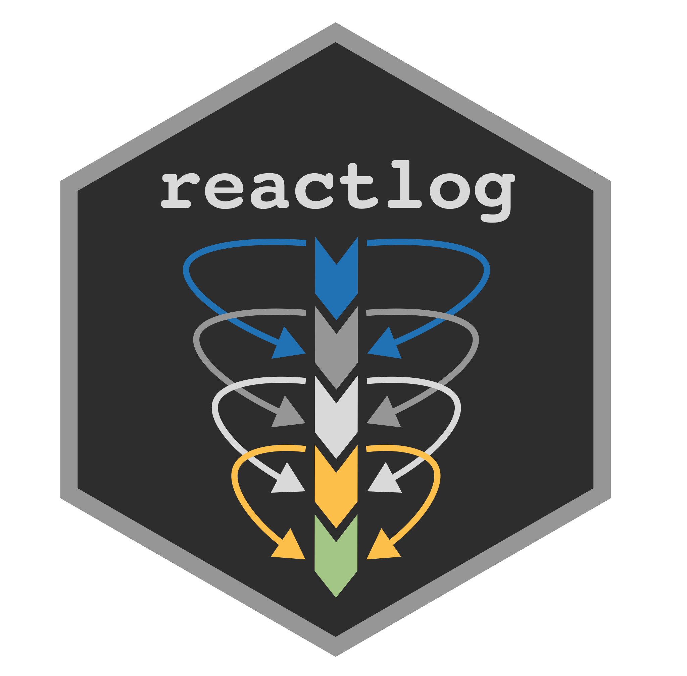

This workshop is recorded. If it does not work for you, it is better to listen and stay on track. Fear not! You can retry later on your side with the recording.
An introduction to {shinyValidator}
2022-10-24
David Granjon, Novartis
Welcome
We’re in for 2 hours of fun!
- Grab a ☕
- Make yourself comfortable üõã or üßò
- Ask questions ❓
Program
- Introduction 5 min
- Setup {shinyValidator} 45 min
- Analyse {shinyValidator} report 45 min
- Questions
Workshop Material
Clone this repository with the RStudio IDE or via the command line.
Then run renv::restore() to install the dependencies.
Pre-requisites
If you want to run {shinyValidator} locally (not on CI/CD), you must have:
Introduction
Clothes don’t make the man
Your app may be as beautiful and as cool as you want, it is useless if it does not start/run.
From prototype to production
How do we transition❓
Reliable : is the app doing what it is intended to do?
Stable : how often does it crash?
Available : is the app fast enough to handle multiple concurrent users?
In practice, a few apps meet all these requirements üòà.
Available tools
- Easier checking, linting, documentation and testing.
- Just ‚Ķ easier. üòÄ

- Fix package versions.
- Increased reproducibility.

- Unit tests: test business logic.
- Server testing: test how Shiny modules or pieces work together (with reactivity).
- UI testing: test UI components, snapshots, headless-testing (shinytest2).
Are there bottlenecks?
- Load testing: How does the app behave with 10 simultaneous user? shinyloadtest.
- Profiling: What part of my app is slow?profvis.
- Reactivity: Are there any reactivity issues? .
Automate: CI/CD
- Continuous integration: automatically check new features. üè•
- Continuous deployment: automatically deploy content. ✉️
- Running on a remote environment ☁️:
- Automated.
- More reproducible (more os/R flavors available).
- Time saver.
- Less duplication.
Not easy üò¢
- Select DevOps platform (GitLab, GitHub, …).
- Add version control (git knowledge).
- Build custom GitLab runner (optional).
- Write CI/CD instructions (better support for GitHub).
- Enjoy …
Can’t we make things easier❓
Stop … I am lost …
- There are just so many tools! How to use them properly?
- Is there a way to automate all of this? I just don‚Äôt have time ‚Ķ üòû
Welcome {shinyValidator}
- Integrate all previous mentioned tools.
- Produces a single HTML report output.
- Flexible.
Setup {shinyValidator}
{golem}
We create an empty golem project:
{golem}
We add some useful files, basic test and link to git:
{renv}
Initialize renv for R package dependencies:
{renv}
Install {shinyValidator}
{shinyValidator}: step by step
Overall concept
%%{init: {'theme':'dark'}}%%
flowchart TD
subgraph CICD
direction TB
subgraph DMC
direction LR
E[Lint] --> F[Quality]
F --> G[Performance]
end
subgraph POC
direction LR
H[Lint] --> I[Quality]
end
end
A(Shiny Project) --> B(DMC App)
A --> C(Poof of concept App POC)
B --> |strict| D[Expectations]
C --> |low| D
D --> CICD
CICD --> |create| J(Global HTML report)
J --> |deploy| K(Deployment server)
click A callback "Tooltip for a callback"
click B callback "DMC: data monitoring committee"
click D callback "Apps have different expectations"
click E callback "Lint code: check code formatting, style, ..."
click F callback "Run R CMD check + headless crash test (shinytest2)"
click G callback "Optional tests: profiling, load test, ..."
click J callback "HTML reports with multiple tabs"
click K callback "RStudio Connect, GitLab/GitHub pages, ..."
Audit app
audit_app() is the main function 1:
- headless actions: pass shinytest2 instructions.
- timeout: wait app to start.
-
…: parameters to pass to
run_app()such as database logins, … - scope: predefined set of parameters (see examples).
Audit app: example
%%{init: {'theme':'dark'}}%%
graph TD
A(Check) --> B(Crashtest)
B --> C(Loadtest)
C --> D(Coverage)
D --> E(Reactivity)
click A callback "devtools::check"
click B callback "{shinytest2}"
click C callback "{shinyloadtest}"
click D callback "{covr}"
click E callback "{reactlog}"
Audit app: using scope parameter
Audit app: headless manipulation

About monkey testing
run_crash_test() runs a gremlins.js test if no headless action are passed:
Report example
Your turn
- Call
run_audit(scope = "POC"). - Look at the logs messages.
- When done open
public/index.html(external browser). - Explore the report.
- Modify app code and rerun …
Improve
Disable other checks
For learning purposes we disable load test, profiling, ... at the moment ...
Put some real server code
Add server testing
Add server testing
Server tests are run without the UI, inputs have to be changed manually with session.
Time to commit and push
Customize Crash test
Leverage shinytest2 power1, app being the Shiny app to audit.
Output checks (1/3)
Create this function in helpers.R:
Add it to app_server.R:
Enable output check in audit_app.R:
Output checks (2/3)
Create a new test:
Output checks (2/3)
A svg snapshot is created during first run. If you change the plot, snapshots are compared.
Output checks (3/3)
Performance: Code profiling (1/2)
Add this function to helpers.R1:
Add it to app_server.R:
Performance: Code profiling (2/3)
We have to modify the custom headless script by adding a timeout:
Run the pipeline, wait and review the report.
Performance: Code profiling (3/3)
Let’s add CI/CD
Pipeline output
shinyValidator on GitLab CI
{shinyValidator} CI/CD file
In case you need to control branches triggering {shinyValidator}:
If you have to change the R version, os, …:
- name: Lint code
shell: Rscript {0}
run: shinyValidator::lint_code()
- name: Audit app üè•
shell: Rscript {0}
run: shinyValidator::audit_app()
- name: Deploy to GitHub pages üöÄ
if: github.event_name != 'pull_request'
uses: JamesIves/github-pages-deploy-action@4.1.4
with:
clean: false
branch: gh-pages
folder: publicExample: disable other checks
Modify GitHub actions yaml file:
Link to GitHub
Create a remote repository on GitHub and add it to the current project:
Run our first pipeline
- Make sure GitHub Pages is enabled.
- Commit and push the code to GitHub.
- You can follow the GitHub actions logs.
- When done, open the report an discuss results.
- Time to add some real things!
Novartis, 2022